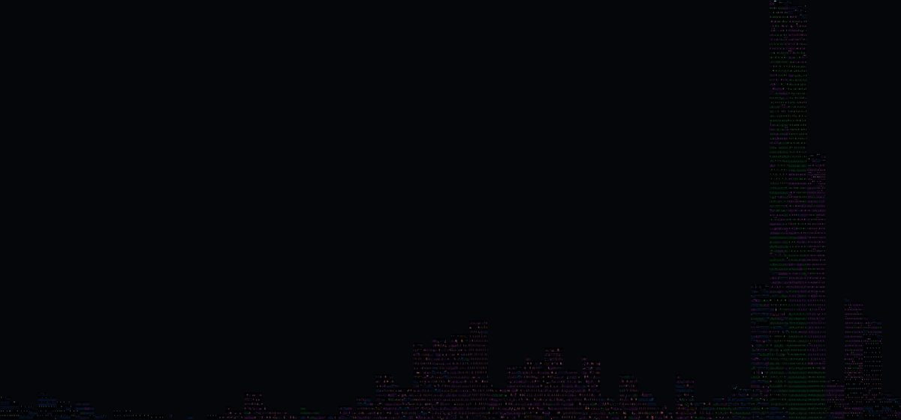
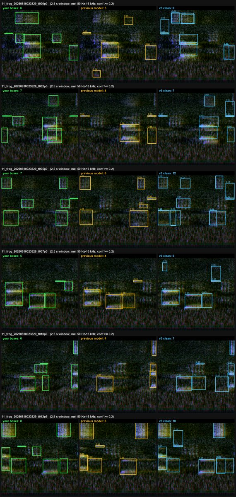
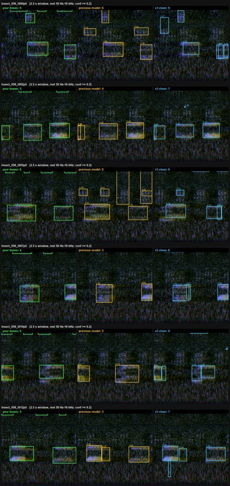
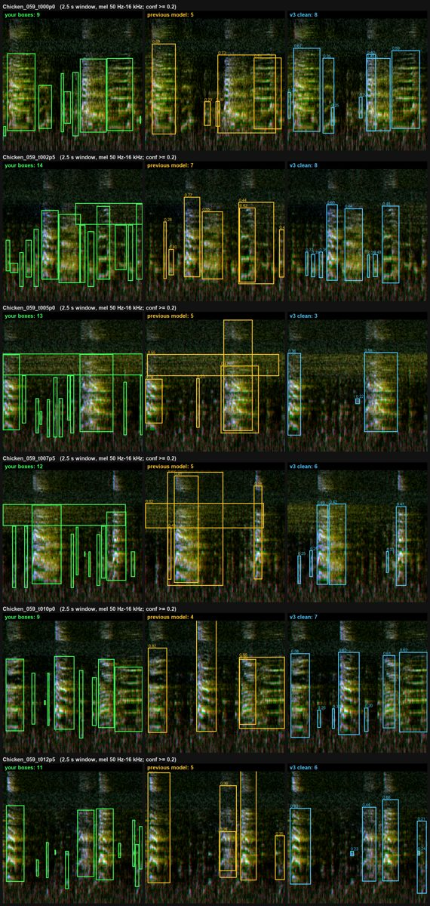
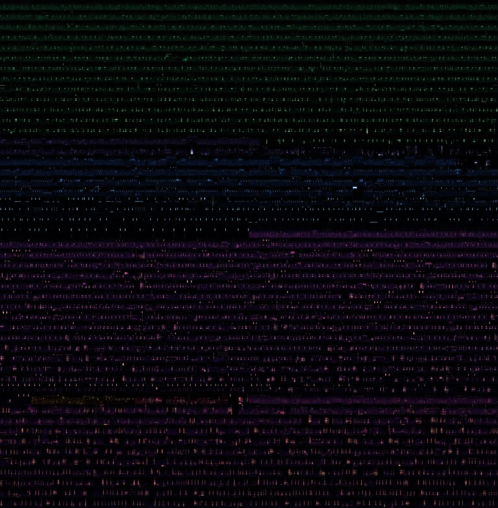
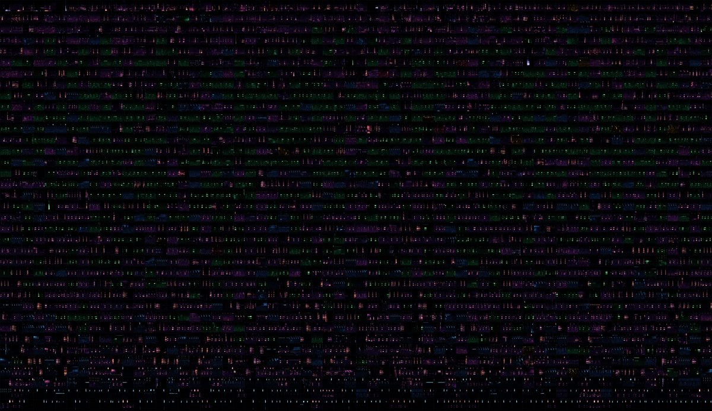
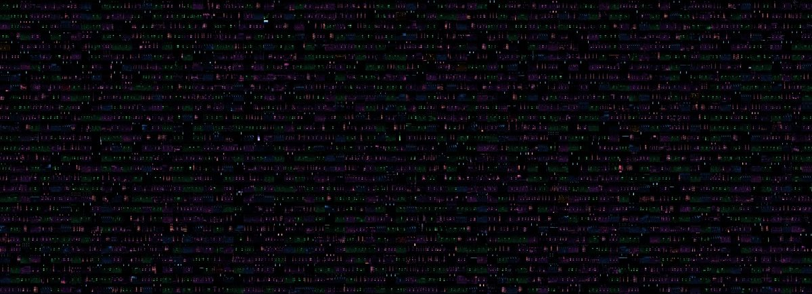
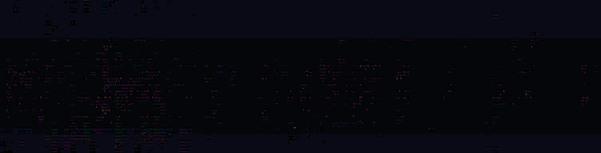

01At a glance
A single microphone at a working homestead, listening around the clock since mid-July. A frozen bioacoustic foundation model and three small specialist detectors decide which moments are worth a human's attention. Everything a person confirms by ear becomes evidence, and only that evidence trains the next model.
Recordings received per day by the workstation. Hover a bar for the exact count. Two detectors were paused on October 2 after the incident described in section 08; the chicken detector kept running.
02The listening chain
Nothing exotic: a clip-on USB lavalier microphone, the open-source BirdNET-Pi recorder on a Raspberry Pi 4, and an ordinary desktop. What makes it dependable is how audio is handed off and how every model output is recorded.
Hardware
| Microphone | Movo M1 USB lavalier (clip-on), 20 ft cable |
|---|---|
| Recorder | Raspberry Pi 4 Model B running BirdNET-Pi (unchanged bird analysis) |
| Audio | continuous 15 s WAV · 48 kHz · 16-bit · 2-channel, downmixed to mono |
| Workstation | Intel Core i9-14900KF · 32 GB RAM · Linux services under WSL2 |
| Listener | CPU only · 1.07 s per 15 s recording (≈14× real time) |
| GPU | NVIDIA RTX 4090 — offline training and batch evaluation of the call localiser only |
Hand-off that doesn't lose audio
BirdNET-Pi deletes recordings after its own analysis. A small sidecar on the Pi copies each finished file into a durable queue and keeps it until the workstation confirms a checksum-verified save. If the link drops, the Pi builds a backlog and replays it.
Tested on the live system:
- workstation outage → backlog replayed
- lost acknowledgement → same file re-sent safely
- full queue → back-pressure instead of eviction
- restarts → no reset of sequence numbers
Result: 0 dropped recordings, 0 sequence gaps. An earlier design lost six recordings; that loss is kept on record rather than papered over.
03Model output is never truth
The archive keeps three layers apart. A high model score is one claim; a human judgement is another; neither ever overwrites the other. Corrections are new records that point at what they replace.
Label authority
| Source of a label | Can train a model? |
|---|---|
| Raw detector or dataset label | No |
| Model suggestion | No |
| Human-reviewed, certain/probable | Yes |
| Human-reviewed, possible/unsure | No |
| Validated by an explicit protocol | Yes |
Where AI helps, and where it stops
AI assistants (a local agent framework and Anthropic's Claude) help with operations, audits, documentation and first-draft annotation. Their limits are enforced, not just promised:
- draft call boxes are stored as unverified until the reviewer listens and confirms the whole clip;
- the review desk rejects any save marked as AI review, with no write;
- a training window is exported only if every sound in it has been reviewed — a half-labelled window would teach a detector that real calls are background.
04Three specialist detectors on one embedding
Each 15-second recording is cut into three 5-second windows. Each window is embedded once by Google's Perch 2 bioacoustic model (frozen, 1,536 numbers per window); three small linear "heads" then score that same embedding for insects, chickens and frogs. They're binary presence detectors, not species identifiers, and their scores are ranking scores, not probabilities.
| Head | Output | Training windows | Test AP | Test F1 | Research threshold | Field threshold |
|---|---|---|---|---|---|---|
| InsectNet 0.3.0 | insect_present | 6,097 | 0.969 | 0.919 | 0.85 | 0.9995 |
| ChickenNet 0.2.0 | chicken_vocalization_present | 5,492 | 0.985 | 0.947 | 0.47 | 0.9999 |
| FrogNet 0.1.0 | frog_present | 7,505 | 0.965 | 0.911 | 0.55 | 0.95 |
Development metrics on grouped held-out partitions. Field thresholds are deliberately much stricter than the research ones, to keep the review queue humane. That trades away recall (section 08).
FrogNet smoke tests (field threshold)
- 1,253 of 1,308 local frog windows flagged
- 106 of 128 regional frog recordings flagged
- 0 of 3,781 locked look-alike windows (insects, chickens, cats, dogs)
Published, with provenance
Every head ships as a checksum-verified bundle with its model card, training manifest digests and known limits.
05What the site sounds like
Each clip below is a reviewed 15-second field recording turned into a datasheet video: the original detector display on the left, wideband and PCEN views on the right, and a timeline of every call drawn as a box. Play them with sound. The annotations started as AI drafts from signal analysis. The reviewer listened, corrected them in a second pass where needed, and confirmed the clip. Some on-video counters were rendered before that confirmation and still read "unverified".
06Human review at work
The detectors don't decide anything on their own; they fill a review queue. One reviewer works through it in short sessions, judging every detector at once for the exact 5-second span, with a required certainty and optional tags.
What the reviewer hears around the animals
Show the tag counts as a table
| Tag | Approved windows |
|---|---|
| faint | 365 |
| static | 308 |
| rain | 170 |
| machine hum | 132 |
| clear | 142 |
| heavy rain | 72 |
| human speech | 54 |
| alarm | 26 |
| rooster crow | 26 |
| egg song | 8 |
Blinded weekly validation
A weekly packet mixes 12 detector positives, 12 borderline items, 6 random controls and 2 hidden repeats. Scores and detector names stay hidden until after each judgement. The first completed packet:
- insect positives confirmed: 4/4
- chicken positives confirmed: 2/5 (pigs and machinery fool it)
One packet is far too small for rates. It shows the design works, and gives an early warning about chicken look-alikes.
When the reviewed moments happened

07From "something is here" to every call
Presence detectors say whether a window holds a frog, not where or how many. The second layer is a class-agnostic object detector (YOLO26) that draws a box around every animal call on a purpose-built spectrogram image, at 2.5 seconds per image. It is trained only on clips the reviewer confirmed.
Recall at matched precision (≈ 0.70), 22 test clips from 3 unseen nights
Highlighted: the released model. Generic image-model weights (COCO) beat pretraining on public bird and frog box datasets, which mostly label only one group of animals and so teach the detector that the others are background. *The previous model is scored only on the 13 test clips it hadn't trained on.
Show as a table
| Variant | Frogs | Insects | Chickens |
|---|---|---|---|
| previous model (by-clip split)* | 0.89 | 0.59 | 0.65 |
| public bioacoustic pretraining | 0.93 | 0.46 | 0.68 |
| v3 clean — COCO start (released) | 0.92 | 0.66 | 0.67 |
| v3 + faint synthetic calls | 0.91 | 0.53 | 0.74 |
| non-commercial pretraining (diagnostic) | 0.93 | 0.52 | 0.68 |
| larger model (YOLO26m) | 0.88 | 0.48 | 0.65 |
Out in the archive: nights no model trained on
Share of reviewer-approved windows from nights with no labelled clip in which the localiser drew at least one box (confidence 0.15). Faint frogs remain the clearest gap.
Show as a table
| Group | Clear: previous | Clear: v3 | Faint: previous | Faint: v3 |
|---|---|---|---|---|
| Frogs | 0.21 | 0.72 | 0.00 | 0.14 |
| Insects | 0.54 | 0.80 | 0.26 | 0.49 |
| Chickens | 0.82 | 0.95 | 0.52 | 0.81 |
Precision–recall trade-off
13 fair test clips. Each point is one confidence setting. v3 reaches far more of the reviewed calls (up to 86%) when it is allowed to be less precise.
Released model
- YOLO26s, one class ("call"), COCO-initialised, fine-tuned only on reviewed site clips
- Training: 64 clips over 20 nights; validation 15 clips over 3 nights; test 22 clips over 3 nights
- Spectrogram image: 1,024 × 1,024 px; mel 50 Hz–16 kHz; two dB channels plus PCEN
- Best F1 0.70 (precision 0.79, recall 0.62); sensitive setting recall 0.86
- No non-commercial data anywhere in its lineage; those comparison data were deleted
- Machine noise is learned as background; speech windows are never used
Before and after, on a test night






Sound and vision together
08What went wrong, and what we keep
The September 30 frog burst
Forty-three night recordings were flagged as frogs; the reviewer heard none. Every stored score was then reproduced exactly from the saved audio, in forward and reverse order. That rules out a one-off processing glitch, but not a persistent model or preprocessing problem, and it says nothing about whether frogs were there. Both night detectors stay paused until reviewed field evidence supports turning them back on. Reproducible is not the same as correct.
Honest caveats
- Recall is inflated where review is detector-led. Every reviewed window got into the queue because some detector fired, so the chicken and frog detectors' 98% "hit rates" on approved windows are upper bounds. The insect detector's 41% is closer to the truth. A random-window check is next.
- Faint frogs. They're visible in the input, but the localiser finds only 14% at its balanced setting.
- Distant speech. An off-the-shelf voice detector catches only about 30% of it; reviewer tags remain the main filter.
- One site, one season, one microphone, one reviewer.
- Detectors, not species identifiers; scores are rankings, not probabilities.
Experiments that didn't work, kept on record
- Synthetic overlapping hen calls didn't teach the detector to split two hens, and cost insect accuracy.
- A pitch-based two-voice splitter found the right hen pitches but split only 1 of 8 real overlaps, while wrongly splitting 9 of 397 single calls. Overlaps are about 0.5% of calls, so this is parked.
- Public bioacoustic pretraining and a larger detector were both worse on unseen nights than the simpler choice.
- Quiet synthetic calls doubled faint-frog recall in a variant model, but hurt elsewhere, so it isn't the default.
09The season in sound
Every usable approved window of the season — 2,396 five-second moments — as one image. Frogs in green, insects in electric blue, chickens in ember, mixed scenes in magma, rain and machine-only windows in violet, wild birds in gold, pigs in rose. Click any image for full resolution.







10Ethics, privacy and licences
- Non-invasive. A microphone on a post; no animal is handled or disturbed.
- Welfare-relevant, carefully worded. Alarm and distress calls matter for welfare, but claims stay matched to evidence: call types that co-occur with situations, never "translation".
- People. The only voices recorded belong to the consenting household. No speech is published or transcribed, and speech windows never train a model.
- Place. The field site's location is withheld everywhere; files are scanned for location data before release.
- Licences, tracked per source. The presence detectors include non-commercial negatives (ESC-50) and are released for non-commercial research. The call localiser contains only owned site data plus generic image weights. Note that the Ultralytics YOLO code and weights are AGPL-3.0, so commercial use needs AGPL compliance or a separate licence.
11What is available
Public
Hugging Face: 6 modelsinsectnetchickennetfrognetinsectnet-legacyBirdNET-Pi forkhermes-agentreport-metrics.json
Earlier single-clip reviews: Chicken 012 · Chicken 032
Private, for now
The field listener, the evidence archive and review desk, the annotation kit, the raw audio and the call-localiser weights. A full methods paper is in preparation; questions and collaboration requests are welcome.
12What comes next
- A true miss rate: review a random sample of windows that no detector chose.
- Faint frogs: more reviewed faint-frog nights, plus the quiet-call training variant.
- Call types and context: group boxed calls by sound, and log what was happening (alarm, feeding, egg song, weather), starting with chickens.
- Live: a real-time version of the datasheet videos above, a moving spectrogram with every call boxed as it happens, for sanctuaries, small farms and zoos.
13Evidence ledger
Where every number on this page comes from
| Claim | Source | Date |
|---|---|---|
| Field volume and per-detector totals | read-only counts on the field listener ledger | 2026-10-20 |
| Hardware and audio format | system query; WAV header; agent operations notes | 2026-10-20 |
| Relay failure tests; real-time factor | field listener validation report | 2026-07-15 |
| Archive totals and threshold crossings | read-only archive query | 2026-10-20 |
| Review counts and timing; blinded packet | archive decision and validation tables | 2026-10-20 |
| Detector metrics | training run reports and model cards (Hugging Face, GitHub) | 2026-07-15 / 07-22 |
| Localiser test results | night-grouped evaluation, clip-level box matching | 2026-10-20 |
| Unseen-night archive recall | batch run of every approved window, package recordings excluded | 2026-10-20 |
| September 30 incident | incident record and authorised isolated replay | 2026-10-02 / 10-03 |
| Annotation totals | per-clip datasheets, schema 0.3 | 2026-10-20 |
All summary numbers are also in report-metrics.json. Raw audio, the archive and personal data are not published.